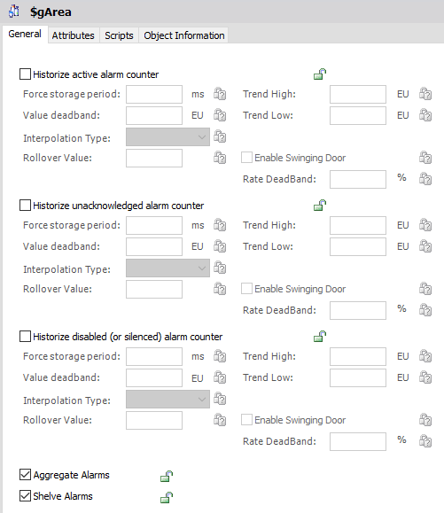
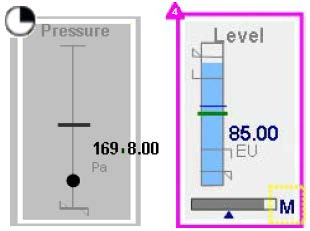
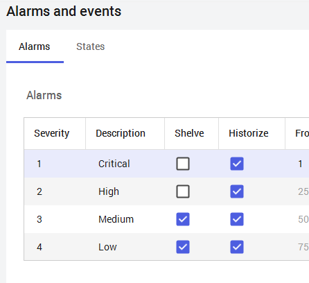
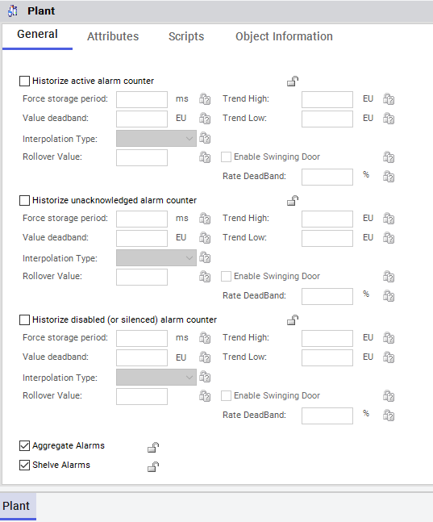

Page 503
Module 9 — Alarms and Events | Pages 497-506
Section 1 – Alarming Overview
Section 1 – Alarming Overview
Introduction to Alarms and Events
The alarm and event capabilities allow users to automate the detection, notification, historization,
and viewing of application (process) alarms and events or system/software alarms and events.
Alarms and events are both occurrences in the runtime system. They are different and the system
distinguishes between the two.
An alarm represents the occurrence of a condition that is considered abnormal and requires
immediate attention from a user. Examples of alarms include:
A process measurement exceeded a predefined limit, such as a high temperature alarm.
A process device is not in the desired state, such as a pump that should be running has
stopped.
An event is an occurrence of a condition at a certain point in time. Examples of events include:
The system engineer changed the runtime system configuration, such as the deployment
of a new automation object.
A Platform came back on line, after it had a failure or shutdown.
The following items are not considered alarms or events:
Configuration actions within the Galaxy Repository, such as import or checkout
A message sent to the system logger (OCMCLogger)
Value
Limit
Category
Visualization Clients as Alarm Consumers
Visualization clients can be configured to consume the alarms and events subscribed by the alarm
providers. An alarm provider is specified by providing the node name and the name of the
provider. The deployed Platform on a node can be configured as the alarm provider; therefore,
only one alarm provider can exist per node. In addition, visualization clients can be configured with
specified query filters to determine the consumption of alarms from the alarm providers. The query
filters can be based on areas that have been subscribed by the alarm providers.
Alarm Acknowledgment from Distributed Alarming
Visualization clients can be configured to allow operators to acknowledge alarms that are reported
by the Platform. The Platform receives the request to acknowledge an alarm and forwards it to the
target automation object. The alarmed attribute in the automation object will be set to
acknowledged. Security needs to be considered as part of this operation. An optional comment
can be entered when an acknowledgment is requested.
Alarm Enable/Disable
Alarming on any automation object can be enabled or disabled. The Platform receives the enable
request and forwards it to the target automation object’s AlarmMode attribute. Security needs to be
considered as part of this operation.
The Platform can also be an event provider that provides events to the visualization client’s
distributed Event subsystem. This provider routes all events that are generated by automation
objects hosted by that Platform to Application Server. An event generated by Application Server
contains information that is generated by the event functions inside the automation object.
For different types of events, information is included as follows:
System events:
Type (or Category) = System
Timestamp
Tagname
Tag description
Area
System event description (started, stopped)
Security audit events:
Type = Operator Change
Timestamp
TagName
Tag.primitive.attribute
Tag description
Area
Section 1 – Alarming Overview
ViewEngine name
Operator 1 name
Operator 2 name
Old value
New value
Application change events:
Type = Data Change
Timestamp
TagName
Tag.primitive.attribute
Tag description
Area
ViewEngine name
Old value
New value
Alarm Queries
Alarm queries are used within Alarm Clients to retrieve real-time alarm information and event
reports from the Galaxy.
The fully qualified syntax of an alarm query to retrieve a single alarm within an object as reported
by a specific Platform object is:
\\nodename\Galaxy!area!object.attribute
If the Platform object that serves as an alarm provider is located in the local computer, the
following syntax of the alarm query is allowed:
\Galaxy!area!object.attribute
The following table lists variants of the alarm query and their return data:
Alarm Query
Results
\\nodename\Galaxy!area
All alarms and events from the area object itself.
All alarms and events from all the objects hosted in the area.
All alarms and events from all subareas contained in the area,
as configured in the Model view of the System Platform IDE.
All alarms and events from all the objects hosted in the
contained areas.
\\nodename\Galaxy!area!area
All alarms and events from the object itself.
\\nodename\Galaxy!winplatform
All alarms and events from the Platform object itself.
\\nodename\Galaxy!engine
All alarms and events from the engine object (AppEngine or
ViewEngine) itself.
\\nodename\Galaxy!dio
All alarms and events from the device integration object itself.
Use of a Wildcard
The asterisk (*) is a wildcard character that may be used to substitute any character or characters
in the object.attribute part of the alarm query.
The following table lists different examples on the use of the wildcard character on alarm queries
and their return data:
Using Multiple Queries
Multiple queries can be submitted by an Alarm Client. For example, if Area1 and Area2 are two
mutually exclusive areas, the following two queries can be submitted at once:
\Galaxy!Area1 \Galaxy!Area2
By using multiple queries it is possible to retrieve alarms from different nodes (Platform objects) at
the same time, for example:
\\NodeNameA\Galaxy!Area1 \\NodeNameB\Galaxy!Area2
Alarm Aggregation
Alarm aggregation provides an efficient way to identify whether any alarms on an object are
currently in the InAlarm state, the overall status of the most important of those alarms, and how
many alarms are active at each level of alarm severity and at each level of containment. This
makes it possible to follow a trail from one level to the next to find the underlying cause of a
complex object’s alarms.
You can view alarm aggregation statuses in runtime clients such as Object Viewer. You can build
graphical representations to view alarm aggregation statuses in visualization applications using
animations, such as the alarm border animation with Situational Awareness Library symbols or
with symbols.
Alarm aggregation functionality can be described for an:
Object
Area
Attribute
Alarms are aggregated if they are in one of three states:
UNACK_ALM
ACK_ALM
UNACK_RTN
Alarms in the ACK_RTN state are not aggregated.
Alarms in silenced or shelved mode are aggregated, even though they do not appear in the alarm
client at runtime.
Alarm Query
Results
\\nodename\Galaxy!area!object.*
All alarms and events from a specific object within an area.
\\nodename\Galaxy!area!*.attribute
All alarms and events from all the objects in the area for the
specific attribute.
\\nodename\Galaxy!area!objectprefix*
All alarms and events from objects whose name begins with
the specific prefix.

• Enable aggregation by checking Aggregate Alarms checkbox
• Sets AlarmAggregationStateCmd attribute to True
• Window title: $gArea with minimize/maximize/close buttons
• Tabs: General (active), Attributes, Scripts, Object Information
General Tab Contents:
• Historize active alarm counter (unchecked)
• Historize unacknowledged alarm counter (unchecked)
• Historize disabled (or silenced) alarm counter (unchecked)
Historization Fields (for each counter):
• Force storage period: [ms]
• Value deadband: [EU]
• Rollover Value
• Trend High: [EU]
• Trend Low: [EU]
• Rate DeadBand: [%]
• Interpolation Type (dropdown)
• Enable Swinging Door (unchecked)
Bottom Checkboxes (red arrow highlighting):
• ☑ Aggregate Alarms (checked - enables aggregation)
• ☑ Shelve Alarms (checked)]
Section 1 – Alarming Overview
Alarm Aggregation Attributes
A set of five read-only attributes provide runtime aggregated alarm status information. These
attributes are available for all Objects. If alarm aggregation is enabled on the Area, the following
attributes aggregate their respective alarm status values for the Area, for all sub-Areas, contained
objects, and their descendants assigned to the Area. If alarm aggregation is disabled, these
attributes remain at their default values.
These attributes are referenced as follows:
Additionally, an array attribute is used to provide counts of all alarms by severity levels and status.
It can be referenced as follows:
Configuring Alarm State Aggregation
Configuring alarm state aggregation consists of normal alarm configuration procedures, plus an
added step of enabling the aggregation feature on each relevant Area object. Check the
Aggregate Alarms check box in the area object configuration editor to enable alarm aggregation.
This sets the value of the AlarmAggregationStateCmd attribute to True.

Alarm Border Animation
Alarm Border animation shows a highly visible border around a symbol or graphic element when
an alarm occurs. The color and fill pattern of the border indicates the severity and current state of
the alarm. Plant operators can quickly recognize alarm conditions when Alarm Border animation is
used.
Alarm Border animation also shows an indicator icon at the top left corner of the border around a
closed graphic element. For open pie or arc graphic elements, the indicator icon is placed at the
top-left most location of the start and end points.
Alarm severity (1-4) or the current alarm mode (Shelved, Silenced, Disabled) appear as part of the
indicator icon. The indicator icon can be shown or hidden as a configurable option of Alarm Border
animation.
Alarm border animation can be applied to all types of symbols except embedded symbols and
nested groups. Alarm border animation can also be applied to graphic elements and grouped
elements.
Understanding the Behavior of Alarm Border Animations
Alarm Border animation appears around a graphic element based on the current state of the
object's aggregated alarm attributes. The appearance of the alarm border itself reflects the current
alarm state and the user’s interaction with the alarm.
Symbol’s process value transition into an alarm state: Alarm Border animation
appears around the symbol based on alarm severity with blinking.
User acknowledges an alarm with the process value still in an alarm state: Alarm
Border animation appears around the symbol without blinking.
Alarm value returns to normal without the user acknowledging the alarm: Alarm
Border animation remains around the symbol in a defined Return to Normal visual style
without blinking.
Alarm value returns to normal and the user acknowledges the alarm: Alarm Border
animation no longer appears around a symbol.
User suppresses an alarm: Alarm Border animation remains around the symbol in a
defined Suppressed visual style; however, an alarm indicator icon does not appear for a
Suppressed state.
New alarm condition occurs when Alarm Border animation appears around a
symbol: The animation updates to show the new alarm state.
In the case of aggregation alarms: Alarm Border animation shows the highest current
alarm state.
Section 1 – Alarming Overview
Alarm Border animation can be configured by selecting Alarm Border from the list of Visualization
animations. The Alarm Border pane contains mutually exclusive fields to set the referenced
attributes for aggregate or individual alarms.
To define the source of aggregated alarms, users specify Alarm Border animation by entering an
attribute or object name in the Use Standard Alarm-Urgency References field of the Alarm Border
pane. The selected object attributes map to the following alarm urgency attributes:
AlarmMostUrgentAcked: Indicates the acknowledgment status (True/False) of the
highest priority current alarm
AlarmMostUrgentInAlarm: Indicates the InAlarm status (True/False) of the highest
priority current alarm
AlarmMostUrgentMode: Indicates the mode (Enabled/Silenced/Disabled) of the highest
priority current alarm
AlarmMostUrgentSeverity: Indicates the severity as an integer (1-4) of the highest
priority current alarm; if no alarms are in an InAlarm state or waiting to be acknowledged,
the value is 0
AlarmMostUrgentShelved: Indicates the shelved status (True/False) of the highest
priority current alarm
To configure Alarm Border animation for individual alarms, users specify references to the
following alarm urgency sources:
InAlarm Source
Acked Source
Mode Source
Severity Source
Shelved Source
Alarm Border animation subscribes to these attributes. Based on the alarm state of these
attributes, Alarm Border animation is applied to the graphic element in runtime.
Changing the Alarm Border Indicator Icon
Alarm border animation shows an indicator icon at the top left corner of the border with alarm
severity as a number from 1 to 4. Other indicator images represent alarm suppressed, silenced
and shelved modes.

A default Alarm Border indicator image is assigned to each alarm mode and severity level. The
default images appear in the Image fields of the Alarm and events dialog box. The images are
saved as files in the installation path.
The default Alarm Border indicator images can be replaced by custom images. Supported image
file types include:
.bmp
.gif
.jpg
.jpeg
.tif
.tiff
.png
.ico
.emf
Additional settings, such as settings for alarm plant states and alarm adorner options are available
from the Alarms and events dialog box.
Modify Alarm Border Animation Element Styles
The color and fill pattern of alarm borders are set by the Outline properties of a set of AlarmBorder
Element Styles. The following table shows the Element Styles applied to Alarm Border animations
by alarm severity and alarm state.
Section 1 – Alarming Overview
The assignment of these Element Styles to alarm conditions cannot be changed. Only the
assigned Element Style’s Outline properties can be changed to modify the line pattern, line weight,
and line color of alarm borders.
Shelving Alarms
You can shelve alarms to temporarily hide them from displays for a fixed period. Alarms continue
to be historized, even when they are shelved.
Shelving typically is used to reduce alarm noise, or to temporarily suppress alarms that might be
triggered during system modifications or repairs, allowing you to focus on correcting other more
urgent alarms.
Shelving is similar to silencing an alarm, but shelved alarms differ from silenced alarms in the
following ways:
Shelved alarms have a built-in associated timeout. Shelved alarms are automatically
unshelved when the configured shelving period expires. You can also manually unshelve
alarms and return them to an active, displayed state.
Alarm shelving must be enabled at an area level, but shelving applies only to individual
alarms. You cannot shelve a hierarchy of alarms for an entire area or for an entire object.
You cannot propagate alarm shelving through the Model View hierarchy.
The system enforces role-based limitations on permission to shelve alarms, alarm severity
levels that can be shelved, and the total number of alarms a user can shelve.
The system tracks who shelved the alarm, from what workstation, the reason for shelving the
alarm, when shelving began, and when shelving will expire. Shelved alarms aggregate in similar
fashion to silenced alarms.
Enable Alarm Shelving
Alarm shelving can be configured for each alarm severity with the Alarms and events dialog box.
You can open this dialog box from the Galaxy menu by selecting Configure | Alarms and Events
Alarm Severity
Alarm State
Element Style
1
UnAcknowledged
AlarmBorder_Critical_UNACK
1
Acknowledged
AlarmBorder_Critical_ACK
1
Return To Normal
AlarmBorder_Critical_RTN
2
UnAcknowledged
AlarmBorder_High_UNACK
2
Acknowledged
AlarmBorder_High_ACK
2
Return To Normal
AlarmBorder_High_RTN
3
UnAcknowledged
AlarmBorder_Medium_UNACK
3
Acknowledged
AlarmBorder_Medium_ACK
3
Return To Normal
AlarmBorder_Medium_RTN
4
UnAcknowledged
AlarmBorder_Low_UNACK
4
Acknowledged
AlarmBorder_Low_ACK
4
Return To Normal
AlarmBorder_Low_RTN
All
Inhibited
AlarmBorder_Inhibited
All
Shelved
AlarmBorder_Shelved
All
Suppressed
AlarmBorder_Suppressed
All
Silenced
AlarmBorder_Silenced


Configuration. By default, only Medium and Low severity alarms are selected on this dialog box for
shelving at runtime.
Shelving operations can be enabled or disabled for area objects, which can be configured in the
Object Editor for an area. On the General tab, you can check or uncheck the Shelve Alarms
option. By default, the option is checked, which allows alarms in that area to be shelved at runtime.
Shelving Alarms at Run Time
Use a runtime client to shelve and unshelve alarms. From Application Server, you can use Object
Viewer to monitor and control shelved alarm attributes. From a visualization client, you can use the
alarm client to monitor and control shelved alarms.
Review the key concepts section above for the core topics discussed.
Consider how the concepts in this lesson fit into the broader System Platform and OMI framework.